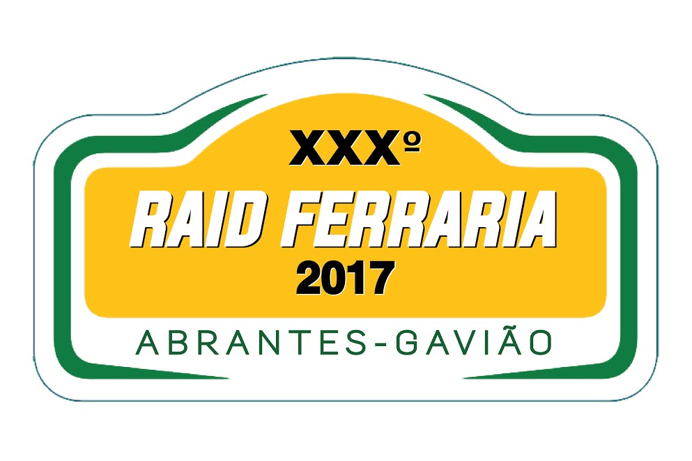

Desde 1970 · Ferraria, Gavião
Cultura, desporto e comunidade no coração do Alto Alentejo.
Uma nova presença digital para o Centro Cultural Recreativo e Desportivo da Ferraria, com acesso rápido a eventos, sócios, karaté, alojamento e contactos.
Destaques
O essencial, logo à entrada.
Reorganização da informação principal do clube em blocos claros, atuais e fáceis de consultar em telemóvel.
Raid Ferraria
Programa, canais Sportity, categorias e informação oficial da edição 2026.
AbrirFesta da Ferraria
Jantar de frango assado, bar, doces tradicionais, rifas, artistas e música pela noite dentro.
AbrirKaraté
História da secção, palmarés, objetivos e contactos dos responsáveis.
AbrirSócios
Ficha de inscrição, quotas, IBAN e instruções de pagamento.
AbrirAlojamento
Lista pesquisável de alojamentos úteis para visitantes, equipas e público.
AbrirO Clube
Uma coletividade com história e futuro.
O clube nasce da dinâmica local das festas de verão, do desporto amador e do associativismo. Hoje junta tradição, Raid TT, karaté, cultura e apoio à comunidade.
Conhecer a história- Início como Comissão de Festas.
- Passa a Grupo Desportivo da Ferraria.
- Organização de prova de atletismo.
- Primeiro Raid TT Ferraria.

Documentos
Tudo à mão.
Ficha de sócio, estatutos e regulamento interno acessíveis num só local.
Memória do Raid
Arquivo visual completo do Raid Ferraria.
O novo site já inclui cartazes, logótipos e imagens históricas de várias edições entre 2010 e 2026, organizadas numa página própria do rally para consulta rápida.
Ver arquivo do Raid
2017logo + cartazFala connosco
Queres participar, apoiar ou obter informação?
Envia mensagem para geral@clubeferraria.pt ou visita a sede na Ferraria.
Contactar